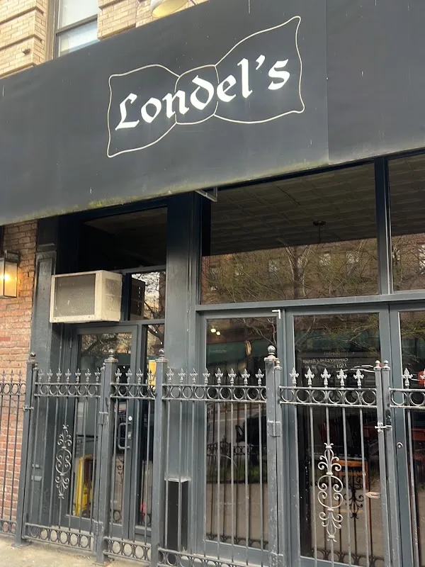

Take a seat
at Londel’s
A restaurant in Manhattan. Explore a sample table collection and ask Londel’s about the dishes on its actual menu.
Explore the table →2620 Frederick Douglass Blvd, New York, NY 10030
A place to begin
Start with a part of the sample menu, then call the restaurant to confirm the actual dishes and availability.
PlatesExplore the sample collection, then ask the store about the current range and availability.
Explore plates →Demo selection. Confirm products, prices and availability with the store.
A seat at the table
Sample menu entries demonstrate where actual plates, sides and desserts can be displayed with their details.


The real Londel’s
Londel's is at 2620 Frederick Douglass Blvd, New York, NY 10030. Explore the business photographs, then plan a visit or call to ask about the current selection.
Plan your visit →